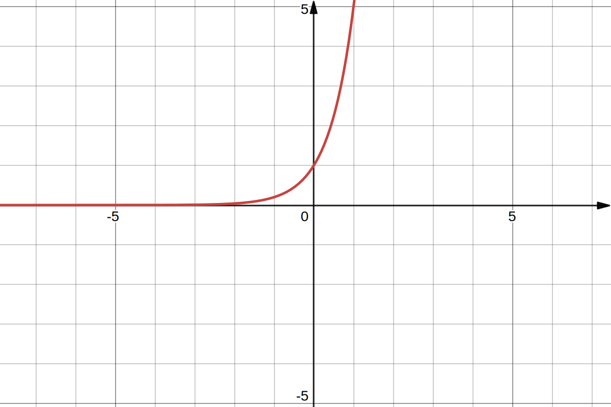
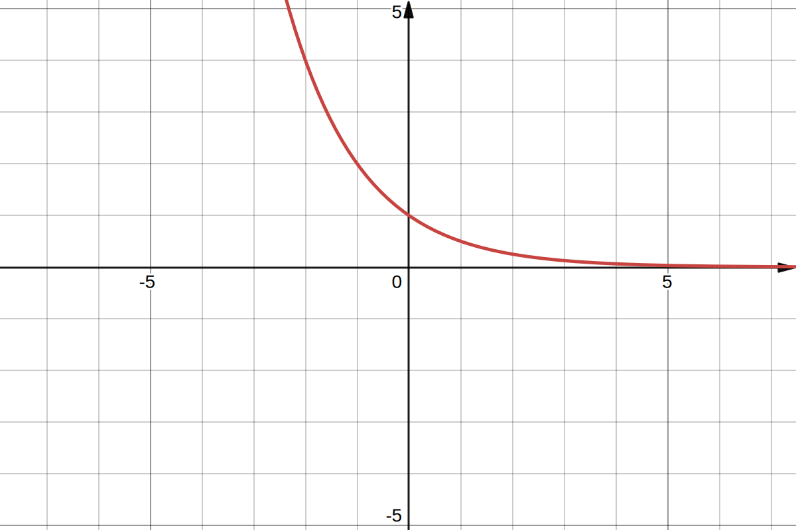

En analyse réelle, l’exponentielle de base \(a\) est la fonction notée \(\exp_a\) qui, à
tout réel \(x\), associe le réel \(a^x\). Elle n’a de sens que pour un réel \(a\)
strictement positif. Elle étend à l’ensemble des réels la fonction, définie sur l’ensemble
des entiers naturels, qui à l’entier \(n\) associe \(a^n\). C’est donc la version continue
d’une suite géométrique.
Définitions
Par la propriété algébrique
On appelle fonction exponentielle réelle, toute fonction de \(\mathbb{R}\) dans
\(\mathbb{R}\), non identiquement nulle et continue en au moins un point, transformant une
somme en produit, c’est-à-dire vérifiant l’équation fonctionnelle :
$$
\quad \forall u,v \in \mathbb{R} \quad f(u+v)=f(u)\times f(v)
$$
et prenant la valeur \(a\) en \(1\).
Par les fonction exponentielle et logarithme népérien
Soit \(a\) un réel strictement positif. On appelle fonction exponentielle de base \(a\) la
fonction définie sur \(\mathbb{R}\) par :
$$
\quad f(x)= \mathrm{e}^{x\ln(a)}
$$
Par une équation différentielle
On appelle fonction exponentielle toute fonction dérivable vérifiant l’équation
différentielle et la condition initiale suivantes :
$$
\quad \begin{cases}
f' = kf \quad k \in \mathbb{R} \\
f(0) = 1
\end{cases}
$$
Comme réciproque des fonctions logarithmes
Soit \(a\) un réel strictement positif, différent de \(1\). La fonction logarithme de base
\(a\) est une bijection de \(\mathbb{R}^{+*}\) dans \(\mathbb{R}\). On appelle fonction
exponentielle de base \(a\) sa bijection réciproque :
$$
\quad \bigl( x \in \mathbb{R}, \quad y=\exp_{a}(x) \bigr) \Leftrightarrow
\bigl( y \in \left]0,+\infty \right[, \quad x=\log_{a}(y) \bigr)
$$
Propriétés algébriques
Pour tous réels strictement positifs \(a\) et \(b\) et pour tous réels \(x\) et
\(y\) :
$$
\quad a^x = \mathrm{e}^{x\ln(a)}
$$
$$
\quad a^x=b^{x\log_{b}(a)}
$$
$$
\quad a^{xy}=\left(a^x\right)^y
$$
$$
\quad a^{x+y}=a^xa^y
$$
$$
\quad a^0=1
$$
$$
\quad \frac{1}{a^x}=a^{-x}
$$
$$
\quad a^xb^x=(ab)^x
$$
$$
\quad 1^x=1
$$
$$
\quad \frac{1}{a^{x}} = \left( \frac{1}{a} \right)^{x}
$$
$$
\quad a^1=a
$$
Étude de fonction
La fonction exponentielle de base \(a\) est indéfiniment dérivable sur \(\mathbb{R}\) et sa
dérivée a pour expression :
$$
\quad {\exp_{a}}^{\prime}(x) = \ln(a) \exp_{a}(x)
$$
Puisque la fonction exponentielle est toujours positive, le signe de sa dérivée ne dépend
que du signe de \(\ln(a)\). La fonction est donc strictement croissante lorsque la base
\(a\) est strictement plus grande que \(1\) ; elle est strictement décroissante quand
la base est inférieure à \(1\) et constante si on a pris pour base \(a=1\).
Les limites de la fonction exponentielle de base \(a\) dépendent de la position de \(a\) par
rapport à \(1\).
Si \(a \gt 1\) alors :
$$
\quad \lim_{x \to +\infty}a^{x}=+\infty
$$
et
$$
\quad \lim_{x\to -\infty}a^{x}=0
$$

Graphique de la fonction \(y=5^x\).
Si \(a \lt 1\) alors :
$$
\quad \lim_{x \to +\infty}a^{x}=0
$$
et
$$
\quad \lim_{x\to -\infty}a^{x}=+\infty
$$

Graphique de la fonction \(y=0,5^x\).
La fonction exponentielle a un comportement prévisible par rapport à la fonction
puissance : en cas d'indétermination en \(+\infty\), c’est l’exponentielle qui
l’emporte:
$$
\quad \lim_{x\to +\infty }{\frac{a^x}{x^b}}=+\infty
\quad \forall a,b \in \mathbb{R},\, a \gt 1
$$